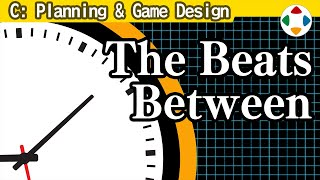
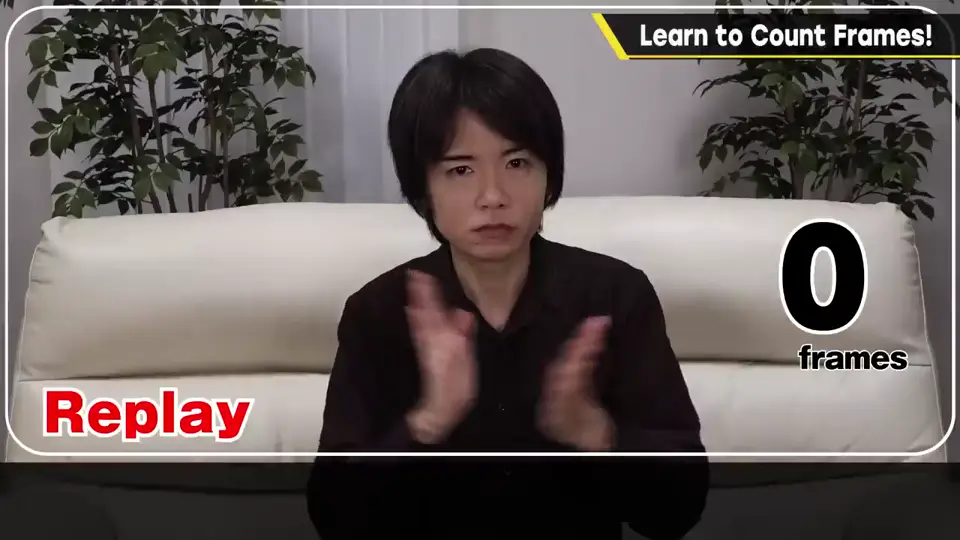
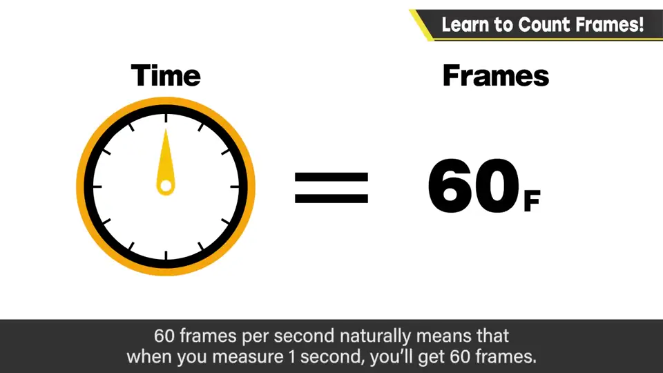
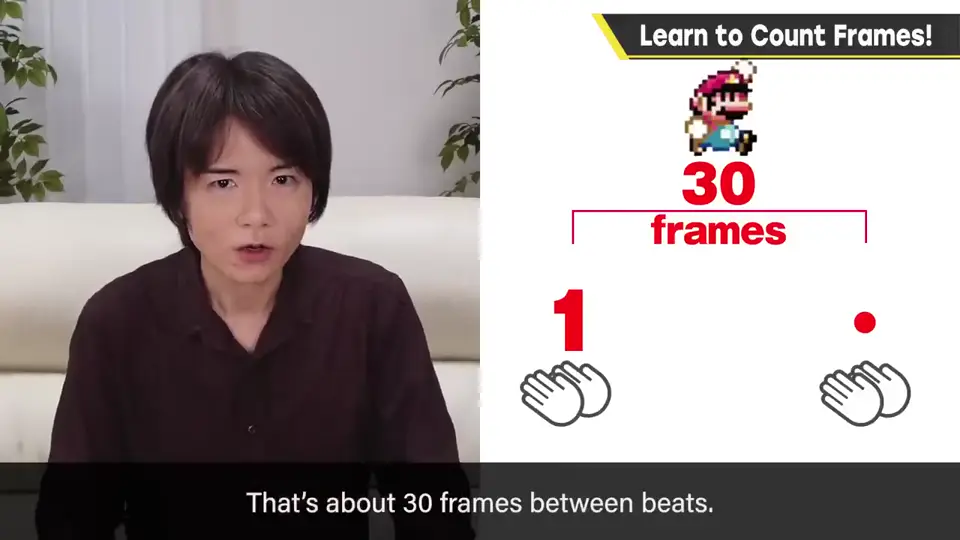
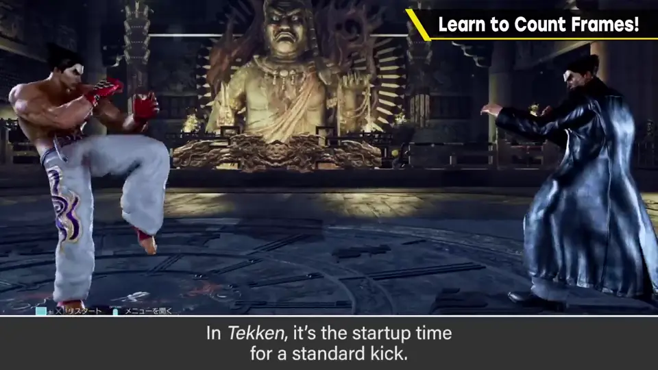
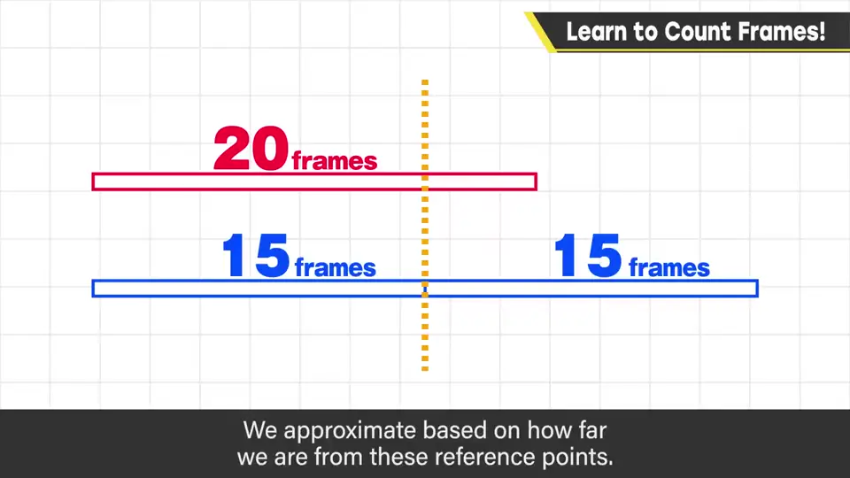
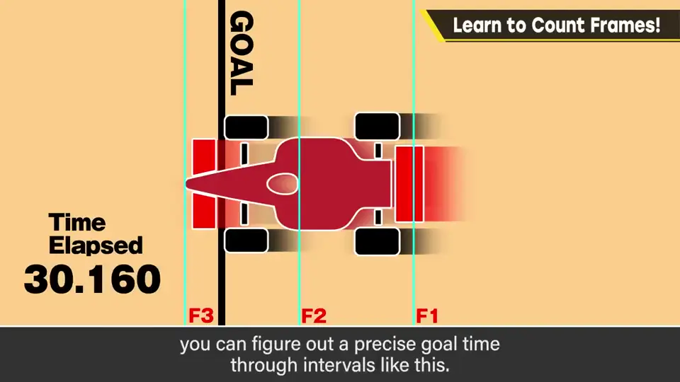
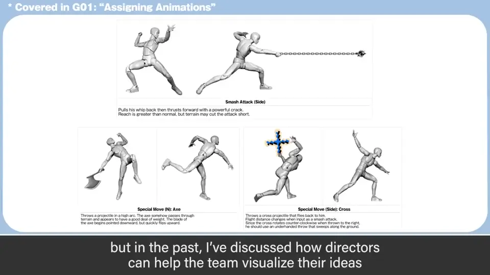

速览
帧是游戏的时间单位，没法凭感觉估出它的长短会很麻烦。比如 30 帧有多长？15 帧呢？知道时间就知道速度，也知道移动距离——所有动作都以帧为基准，所以知道它的长度是必需的。但没有能按帧计时的秒表。前提是每秒 60 帧：数 1 秒当然是 60 帧，但很难数准。所以不要「1、2、3」地数，而是在中间加一拍：「1 和 2 和 3」，这样每拍大约是 30 帧，其一半是 15 帧。15 帧在《大乱斗》里大约是一个重攻击从输入到发出的时间；《铁拳》里普通踢腿的出招时间；《街头霸王 II》重拳的出招大概还不到它的一半——当然因角色和招式而异。例如 20 帧比 15 帧多一点，就看它超出参照点多少来估。（赛车游戏的终点之所以不论多细都能算出精确时间，是用帧与帧之间的距离来测量。）总之先在数秒时加入「和」，剩下靠习惯。以前讲过导演会用手办摆姿势并写出各种帧数指定，向员工传达脑中的动作——自己不能大致数帧就写不出来。就算向电脑输入了帧数，程序或数据也可能出错，这时稍微锻炼人的体感是有效的。
1. 为什么要会数帧 0:03
帧是游戏的时间单位。凭感觉估不出帧的长短，会处处碰壁。比如 30 帧大概有多长？15 帧呢？

知道了时间，就知道速度，也知道移动距离——所有动作都以帧为基准，所以了解它的长度非常重要，是必备技能。但世上并没有能按帧计时的秒表。
2. 「1 和 2 和 3」 1:10
前提是每秒 60 帧。数 1 秒当然就是 60 帧，但这很难数准确。


3. 用参照点估算 1:58
15 帧有多快？
- 《大乱斗》：大约是一个重攻击从输入到攻击发出的时间；
- 《铁拳》：普通踢腿的出招时间；
- 《街头霸王 II》：重拳的出招大概还不到它的一半。


当然因角色和招式而异，但大致是这种速度感。例如 20 帧比 15 帧多一点，大约是 30 帧中点再稍长一些——看超出参照点多少来估算。
补充：赛车游戏的终点不论以多细的粒度测量都能出精确时间，就是用这种方法——用帧与帧之间的距离来测。

4. 为什么开发者要有体感 2:52
总之先在数秒时加上「和」，剩下的就是习惯。
以前讲过，导演为了把脑中设想的动作传达给员工，会用手办摆姿势并写出各种帧数指定——自己不能大致测帧，当然写不出来。

自测题
1. 樱井推荐用什么方法大致数帧？
数秒时在中间加一拍「1 和 2 和 3」，每拍约 30 帧，半拍约 15 帧。 1:34
2. 如何估计 20 帧？
以 15 帧、30 帧为参照点，看超出多少：20 帧比 15 帧稍多，约在 30 帧的中点再长一点。 2:22
3. 为什么开发者本人需要能数帧？
指定动作帧数时需要自己能测；即使输入了数值，程序或数据也可能出错，靠体感能发现问题。 3:09